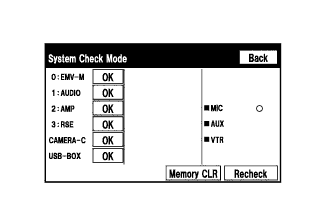

СИСТЕМА МОНИТОРА БОКОВОГО ОБЗОРА (для моделей с системой помощи при парковке) > СИСТЕМА ДИАГНОСТИКИ |
| СИСТЕМА ДИАГНОСТИКИ МОНИТОРА БОКОВОГО ОБЗОРА |
Система диагностики монитора бокового обзора дает возможность проверять сигналы, принимаемые ЭБУ системы помощи при парковке, а также калибровать, настраивать и проверять систему монитора бокового обзора с использованием дисплея модуля системы навигации и индикации.
| ПЕРЕКЛЮЧЕНИЕ ЭКРАНОВ ДИАГНОСТИКИ (при первоначальной инициализации ЭБУ системы помощи при парковке) |
для моделей без монитора типа местности
Во время первоначальной инициализации ЭБУ системы помощи при парковке
После инициализации ЭБУ системы помощи при парковке
для моделей с монитором типа местности
Во время первоначальной инициализации ЭБУ системы помощи при парковке

После инициализации ЭБУ системы помощи при парковке
| РЕЖИМ ДИАГНОСТИКИ |
Войдите в режим диагностики (Нажмите здесь).
Диагностика неисправностей (Нажмите здесь).
|  |
Проверка системы (проверка с помощью экрана режима проверки системы) (Нажмите здесь).
Завершите работу в режиме диагностики (Нажмите здесь).
| ПРОВЕРКА СИГНАЛОВ (входной сигнал ЭБУ системы помощи при парковке) |
Войдите в режим диагностики (Нажмите здесь).
 |
Выберите "Function Check/Setting" (проверка/настройка функций) на экране "Service Menu" (меню обслуживания), чтобы перейти на экран "Function Check/Setting".
 |
Выберите "Camera Setting" (настройка камеры) на экране "Function Check/Setting".
| Инициализация ЭБУ системы помощи при парковке | Переключение между экранами |
| Не выполнено | Экран "SIGNAL CHECK" (проверка сигналов) |
| Выполнено | Экран "MODE SETTING" (установка режима) |
 |
Если появляется экран "MODE SETTING", выберите "BACK CAMERA SETTING" (настройка задней камеры), чтобы перейти на экран "SIGNAL CHECK".
 |
ПРОВЕРКА СИГНАЛОВ
На экране "SIGNAL CHECK" можно проверить состояние сигналов, передаваемых ЭБУ системы помощи при парковке, а также настройки.
| Описание | Информация о проверке | Примечание |
| SPEED | Входной сигнал скорости | Если отображается "CHK" (красный), при выборе "NEXT" система не перейдет к следующему экрану. |
| CAMERA SW | Вход сигнала переключателя на рулевом колесе в сборе (главный выключатель монитора бокового обзора) | |
| BCTY | Состояние обмена данными с главным ЭБУ кузова (распределительный блоком со стороны водителя в сборе) | |
| MIRROR SW | Вход сигнала отвода наружного зеркала заднего вида | |
| SHIFT | Вход сигнала положения рычага переключения передач | |
| STR SIG | Вход сигнала датчика угла поворота рулевого колеса | |
| HANDLE | Вход сигнала положения рулевого колеса | |
| BRAND | Сигнал марки TOYOTA/LEXUS | |
| BODY | Сигнал размера кузова | |
| DEST | Вход сигнала данных о рынке сбыта | |
| MTM | Сигнал монитора типа местности | |
| WFS SET | Сигнал широкоугольного монитора переднего вида | |
| T/M | Сигнал типа трансмиссии |
Проверка SPEED
Проверка CAMERA SW
Убедитесь, что для "CAMERA SW" отображается "OK" (синий), и выберите "OK".
Убедитесь, что "OK" (синий) изменяется на "CHK" (красный). Нажмите выключатель широкоугольного монитора переднего вида и бокового обзора (переключатель на рулевом колесе) и убедитесь, что "CHK" (красного цвета) меняется на "OK" (синего цвета).
Проверка BCTY
Проверка MIRROR SW
Проверка SHIFT
Проверка STR SIG
Проверка HANDLE
Проверка BODY
Проверка DEST
Проверка BRAND
Проверка MTM
Проверка WFS SET
Проверка T/M
Закончите режим диагностики.
| КАЛИБРОВКА ПРИ ОБСЛУЖИВАНИИ АВТОМОБИЛЯ |